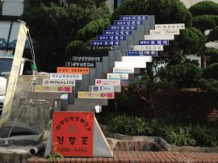
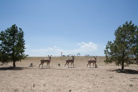

Bits of my Korea trip
한국에서의 팔도 맛 기행을 그리던 나의 꿈은 남편의 바뀐 일정에 따라 산산조각이 났다.September 18, 2013 /
Greetings from Germany
바우하우스 대학에서 3주간 워크샵을 하게 된 남편을 따라 독일을 방문 중인 우리는, 그 대학의 어떤 친절한 교수 리즈의 딸 – 다른 도시에 있는 대학에 들어간 스물 한살 – 의 빈 방에서 신세를 지고 있다. 지난 여름에 방문했던 카셀이나 칼스루헤와 아주 다른, 동독의 도시 바이마르는 아름답고 좋은 냄새가 나고 고요하다. 고요하다 못해 [...]January 8, 2013 /
Greetings from Germany
바우하우스 대학에서 3주간 워크샵을 하게 된 남편을 따라 독일을 방문 중인 우리는, 그 대학의 어떤 친절한 교수 리즈의 딸 – 다른 도시에 있는 대학에 들어간 스물 한살 – 의 빈 방에서 신세를 지고 있다. 지난 여름에 방문했던 카셀이나 칼스루헤와 아주 다른, 동독의 도시 바이마르는 아름답고 좋은 냄새가 나고 고요하다. 고요하다 못해 [...]January 8, 2013 /

일곱 날의 해
해가 뜨면 세상 어느 곳도 부럽지 않을 정도로 아름답지만 해가 사라지면 그 빛나는 도시는 사라지고 우중충한 회색빛이 된다. 날씨에 따라 도시 이미지가 극과 극으로 변하는 이곳의 팔월 셋째 주 날씨 예보는 대부분 노란 태양이다. 운도 좋지. 여행을 왔다고는 하지만 여행의 기분은 아니다. 혼자 여행을 왔다고 생각하면 금세 우울해지고 약해진다. 서른 [...]August 11, 2012 /

Positano and Rome, Italy!
I seemed to find myself in Positano saying ‘so lucky to be here’ quite often. I fell in love with this village when I first saw the picture of pastel colored houses stacked one on top of the next. Really coudn’t think of a better way to spend our summer.August 3, 2012 /
Positano and Rome, Italy!
I seemed to find myself in Positano saying ‘so lucky to be here’ quite often. I fell in love with this village when I first saw the picture of pastel colored houses stacked one on top of the next. Really coudn’t think of a better way to spend our summer.August 3, 2012 /

6월 어느 날 갑자기 다녀온 서울 여행
두 달 전, 잠시 한국에 다녀왔다.남편이 일이 생겨 가야하는 것인데 고맙게도 나도 함께 가자고 해주어서 다녀온 한국은 공기도, 하늘도, 사람들도 똑같았다. 다만 내 그리움이 배가 되었을 뿐. 울릉도 홍합 밥, 따개비 밥 등을 잘하는 집이 있다고 해서 인천 공항에서 내리자마자 곧바로 파주의 한 식당으로 향했다. 오자마자 입이 호강이다.밑반찬은 특별할 것 [...]August 3, 2012 /
6월 어느 날 갑자기 다녀온 서울 여행
두 달 전, 잠시 한국에 다녀왔다.남편이 일이 생겨 가야하는 것인데 고맙게도 나도 함께 가자고 해주어서 다녀온 한국은 공기도, 하늘도, 사람들도 똑같았다. 다만 내 그리움이 배가 되었을 뿐. 울릉도 홍합 밥, 따개비 밥 등을 잘하는 집이 있다고 해서 인천 공항에서 내리자마자 곧바로 파주의 한 식당으로 향했다. 오자마자 입이 호강이다.밑반찬은 특별할 것 [...]August 3, 2012 /

Vegas->Palm Springs->LA->San Diego
애리조나의 그랜드 캐년을 끝으로 우리는 공식적인 로드 트립을 마치고, 이미 행선지가 정해져 있고 호텔과 리조트가 예약되어 있는 여행 시작. 처음부터 이렇게 계획을 세웠지만, 만약 그렇지 않았더라도 당장 호텔을 잡자고 했을 만큼 우리는 많이 지쳐 있었다. 남편과 나는 공인된 늙은이의 체력을 가지고 있으니까. 일주일 동안의 단둘이 차로 그 넒은 곳을 헤매는 동안 [...]July 2, 2011 /
Vegas->Palm Springs->LA->San Diego
애리조나의 그랜드 캐년을 끝으로 우리는 공식적인 로드 트립을 마치고, 이미 행선지가 정해져 있고 호텔과 리조트가 예약되어 있는 여행 시작. 처음부터 이렇게 계획을 세웠지만, 만약 그렇지 않았더라도 당장 호텔을 잡자고 했을 만큼 우리는 많이 지쳐 있었다. 남편과 나는 공인된 늙은이의 체력을 가지고 있으니까. 일주일 동안의 단둘이 차로 그 넒은 곳을 헤매는 동안 [...]July 2, 2011 /

So much more to tell
We left a magical place of glistening white dunes and headed to Arizona. We have seen Santa Fe, White Sands and the endless plains of New Mexico. But wait, there’s more. The Very Large Array.Oh I would never forget you New Mexico, a very beautiful piece of the earth. I [...]July 2, 2011 /
So much more to tell
We left a magical place of glistening white dunes and headed to Arizona. We have seen Santa Fe, White Sands and the endless plains of New Mexico. But wait, there’s more. The Very Large Array.Oh I would never forget you New Mexico, a very beautiful piece of the earth. I [...]July 2, 2011 /
White Sands
도시 아이로 태어나서 언제나 시골 생활을 이유 없이 동경하며 대자연에 대한 갈망을 자연과 비슷한 그 무엇으로 채우고 자란 나로서는, 이번 여행이 과연 나를 어떤 길로 이끌 것인지 도무지 알 수가 없었다. 아무것도 모른 채 지금까지 대용품으로만 보았던 그 진짜 자연에 대한 기대감에 한껏 부풀어 여행을 떠났다. 볼 수만 있다면 빙하도 사막도 [...]July 2, 2011 /
White Sands
도시 아이로 태어나서 언제나 시골 생활을 이유 없이 동경하며 대자연에 대한 갈망을 자연과 비슷한 그 무엇으로 채우고 자란 나로서는, 이번 여행이 과연 나를 어떤 길로 이끌 것인지 도무지 알 수가 없었다. 아무것도 모른 채 지금까지 대용품으로만 보았던 그 진짜 자연에 대한 기대감에 한껏 부풀어 여행을 떠났다. 볼 수만 있다면 빙하도 사막도 [...]July 2, 2011 /

Home seems far far away.
For our honeymoon, I always thought I would go somewhere such as Southern Italy, Africa or Northern europe. I was very disappointed when I found out that we both can’t get out of the states because of the green card processing. Hawaii and several small islands had been suggested, but Roon [...]July 1, 2011 /
Home seems far far away.
For our honeymoon, I always thought I would go somewhere such as Southern Italy, Africa or Northern europe. I was very disappointed when I found out that we both can’t get out of the states because of the green card processing. Hawaii and several small islands had been suggested, but Roon [...]July 1, 2011 /